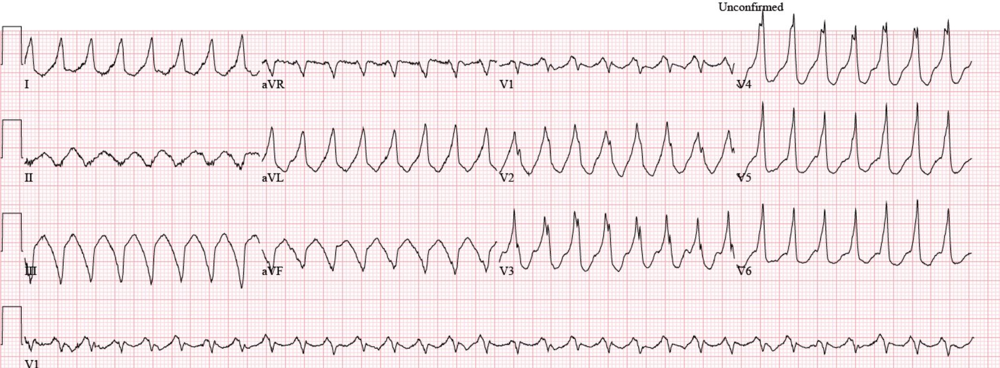
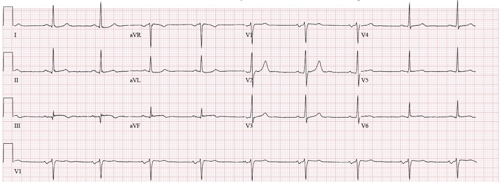
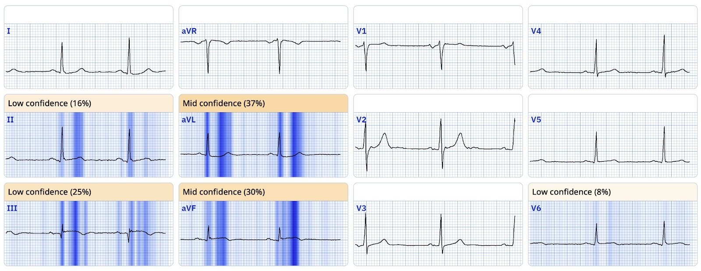
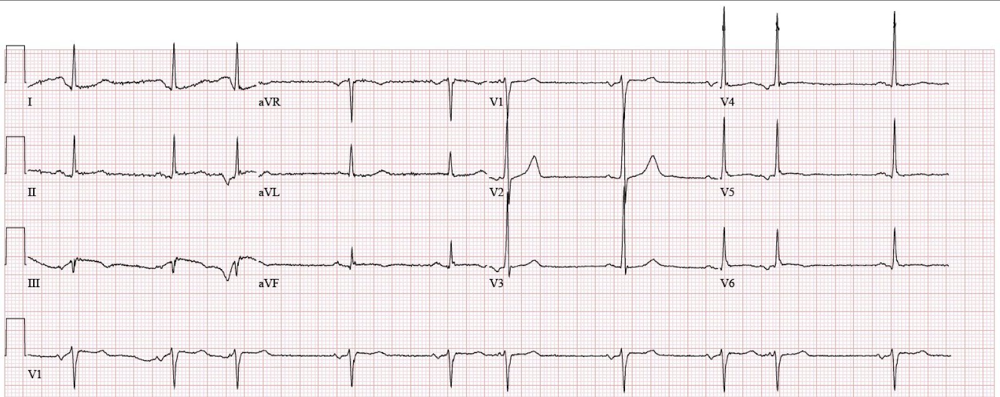
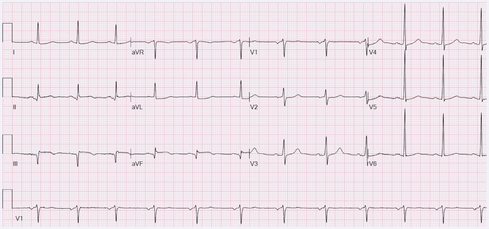
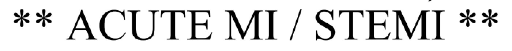
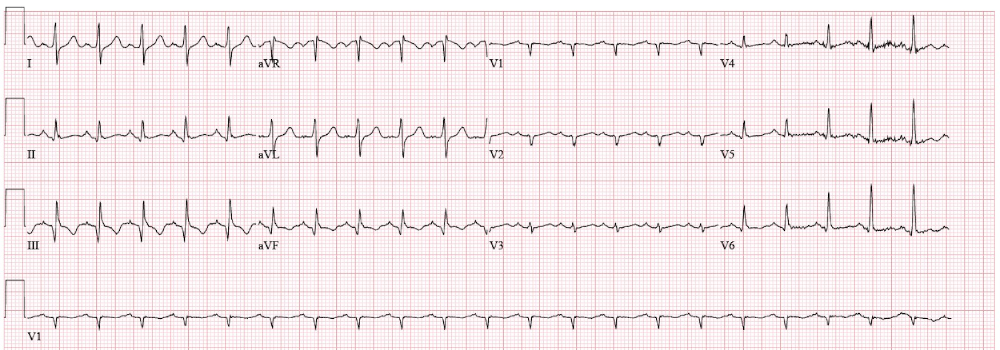
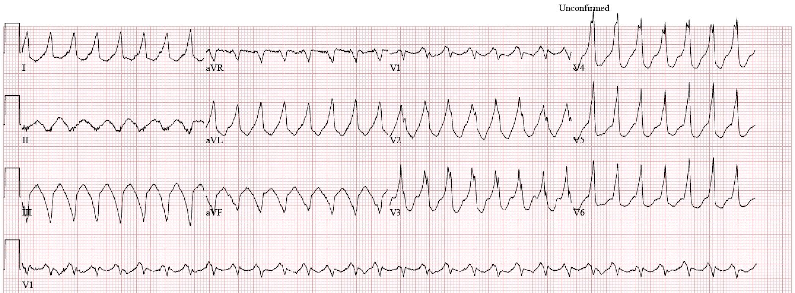
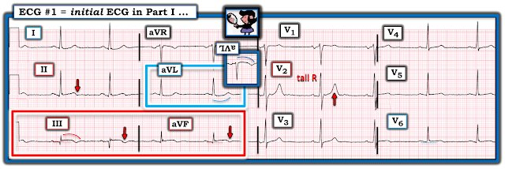

21/10/2025 — Bệnh nhân nhịp nhanh QRS rộng này có cần chụp mạch vành không?
Bản dịch tiếng Việt của bài "Does this patient with wide complex tachycardia need an angiogram?" – Dr. Smith’s ECG Blog. Giữ nguyên toàn bộ 8 hình ảnh của bản gốc.


Ca này được chia thành hai lần nhập viện riêng biệt, cách nhau khoảng 9 tháng.
Phần 1
Một người đàn ông cuối độ tuổi 60, có tăng huyết áp, rối loạn lipid máu, đái tháo đường típ 2 và tiền sử hút thuốc 50 gói-năm, đến viện vào khoảng 10 giờ sáng vì đau ngực khởi phát cấp tính, bắt đầu từ vài giờ trước khi ông đang ở nhà. Ông mô tả cảm giác như bị bóp nghẹt ngang ngực, lan lên hàm. Trước khi xem điện tâm đồ, bạn đã biết chẩn đoán.
Điện tâm đồ 1


Bạn nghĩ gì?
Điện tâm đồ này chẩn đoán OMI dưới-bên. Hầu hết độc giả của blog sẽ nhận ra ca này, và Queen chắc chắn không gặp khó khăn gì.
Smith: Điện tâm đồ này cho thấy giai đoạn bắt đầu tái tưới máu, với phần cuối sóng T cụp xuống ở III và aVF, và phần cuối sóng T hếch lên ở aVL. Nó ở “giữa” OMI đang diễn ra và OMI đã tái tưới máu. Dù không được ghi rõ, tôi dám cược rằng cơn đau của bệnh nhân đang giảm dần hoặc đã hết hoàn toàn.
Điện tâm đồ 1, khả năng giải thích của QOH


Điện tâm đồ này được đọc là “nhịp chậm xoang, tần số thất 55, bất thường sóng T không đặc hiệu.” 20 phút sau, bác sĩ cho aspirin 325 mg, nitroglycerin ngậm dưới lưỡi và xét nghiệm troponin. Có rất ít ghi chép về diễn tiến triệu chứng.
Khoảng một giờ sau điện tâm đồ đầu tiên, troponin I tim (cTnI) trả kết quả 27.157 ng/mL (tham chiếu < 0.033), tức đã là một ổ nhồi máu rất lớn. Cơ sở này không có phòng thông tim (cath lab), và có vẻ kết quả troponin này đã thúc đẩy một cuộc gọi tới cơ sở có khả năng làm PCI, dù mốc thời gian chính xác không rõ trong hồ sơ. Điện tâm đồ được ghi lại.
Điện tâm đồ 2


Có một ít trôi đường nền, nhưng giờ có vẻ đã tái tưới máu hoàn toàn so với điện tâm đồ đầu tiên. Theo ghi nhận, bệnh nhân không còn triệu chứng. Khó hiểu là điện tâm đồ này được đọc là cho thấy “xuất hiện thêm ST chênh lên nhẹ ở chuyển đạo III, ST chênh lên ở mức ranh giới, dưới 1 mm ở II và aVF. Đã xem lại điện tâm đồ với [bác sĩ tim mạch tiếp nhận tại cơ sở PCI], đồng ý không phải STEMI.” Có vẻ như nhiễu đường nền đã bị đọc thành ST chênh lên đang hình thành.
Tại thời điểm này, bệnh nhân được xếp vào diện “chuyển viện ưu tiên” với chẩn đoán NSTEMI. Ông được dùng một liều enoxaparin liều điều trị và clopidogrel 600 mg. Hầu như không có ghi chép nào khác về khoảng thời gian bệnh nhân chờ chuyển viện, dù cTnI lặp lại 3 giờ sau lần đầu là 39.444 ng/mL.
Khoảng 4 giờ chiều (sáu giờ sau điện tâm đồ 1), bệnh nhân được đưa lên xe cứu thương để chuyển viện. Ghi chép tại cơ sở tiếp nhận cũng khá sơ sài và khó hiểu. Điện tâm đồ tiếp theo (tại cơ sở tiếp nhận) mãi tới 7 giờ tối mới được ghi, và được trình bày dưới đây.
Điện tâm đồ 3


Điện tâm đồ này có những chữ sau được in ở đầu trang.


Đến một lúc nào đó, bệnh nhân dường như xuất hiện lại triệu chứng. Ông được đưa đi thông tim, phát hiện tắc cấp do huyết khối đoạn giữa LCx và được đặt stent. Ngoài ra, ông có tổn thương nặng (nhiều khả năng không phải thủ phạm) ở RCA, cũng được đặt stent, và tổn thương ổn định mức độ vừa ở LAD, được đánh giá trên chụp mạch là 60%.
Điều then chốt là, vì mọi điện tâm đồ trước đó đều được đọc là NSTEMI, đồng hồ tính thời gian từ cửa đến bóng (door-to-balloon, D2B) chính thức bắt đầu từ điện tâm đồ 3. Nói cách khác, xét theo mục tiêu cải tiến chất lượng, ca này được xem là một thành công.
Smith: chúng tôi đã chứng minh rằng chẩn đoán STEMI hay NSTEMI phụ thuộc vào thời gian từ cửa đến bóng nhiều hơn hẳn so với việc có hay không có ST chênh lên hoặc tắc cấp!!
- Nunes de Alencar J. Meyers HP. Frick W. McLaren J. Smith SW. Door-to-Balloon Time Outperforms ST-Segment Elevation in Predicting the STEMI vs. NSTEMI Final Diagnosis (Thời gian từ cửa đến bóng dự đoán chẩn đoán cuối cùng STEMI hay NSTEMI tốt hơn ST chênh lên). Journal of Clinical Medicine 2025(14):6588. https://doi.org/10.3390/jcm14186588
Phần 2
Khoảng 9 tháng sau, bệnh nhân nhập viện vì nhiễm khuẩn huyết thứ phát sau nhiễm khuẩn đường tiết niệu có biến chứng. Ông bị ung thư bàng quang và bệnh lý tắc nghẽn đường tiết niệu, đã được điều trị bằng dẫn lưu thận qua da. Ngoài ra, ông đã tiến triển suy tim phân suất tống máu giảm (HFrEF) mạn tính với EF 35% và vô động thành dưới-bên. Trong lúc theo dõi từ xa (telemetry), ông xuất hiện các loạt nhịp nhanh thất không bền bỉ (NSVT). Điện tâm đồ đầu tiên không ghi được cơn VT.
Điện tâm đồ 4


Nhịp nhanh xoang (luôn đáng lo ngại) với nhồi máu thành dưới cũ. Theo ghi nhận, bệnh nhân đang nằm nghỉ thoải mái trên giường. Điện tâm đồ được ghi lại trong một cơn nhịp nhanh thất bền bỉ.
Điện tâm đồ 5


Ngoài việc chẩn đoán VT đơn dạng, chúng ta còn có thể suy ra căn nguyên. Lưu ý rằng QRS âm ở các chuyển đạo dưới (tức là trục hướng lên trên). Điều này là do nhịp nhanh khởi phát từ thành dưới rồi lan ra ngoài (tức là lan lên trên). Đây là VT liên quan sẹo từ OMI trước đó của bệnh nhân. Không có bằng chứng thiếu máu cục bộ cấp (phù hợp với việc bệnh nhân không có triệu chứng thiếu máu cục bộ). Bệnh nhân được bắt đầu dùng amiodarone, nhưng VT tái phát, buộc phải thêm lidocaine. Dù vậy, ông vẫn còn thêm các cơn VT.
Đôi lời ngoài lề
Điều quan trọng cần biết là phần lớn VT đơn dạng là do sẹo. (Trái ngược với VT đa dạng, thường do thiếu máu cục bộ cấp.) Ở bệnh nhân này, với OMI thành dưới trước đó đã biết, không có triệu chứng hội chứng vành cấp (ACS), và VT có trục hướng lên trên, VT liên quan sẹo gần như là chắc chắn. Khi VT bền bỉ xảy ra từ 3 lần trở lên trong vòng 24 giờ, chúng ta gọi đó là “bão điện” (electrical storm, ES). ES thường được duy trì bởi tình trạng cường adrenergic. Và rõ ràng bệnh nhân này có tình trạng cường adrenergic, xét theo nhiễm khuẩn huyết và nhịp nhanh xoang (khi không ở trong cơn VT).
Điều trị nội khoa hiệu quả nhất cho ES là phối hợp amiodarone và propranolol. Thực tế, thuốc chẹn beta không chọn lọc propranolol (đường uống) đã vượt trội metoprolol trong xử trí ES ở một thử nghiệm ngẫu nhiên. Lidocaine có ít vai trò trong xử trí VT không do thiếu máu cục bộ cấp và kém hơn thuốc chẹn beta, procainamide và sotalol.
Tương tự, thông tim rất khó mang lại lợi ích trong ES ở bệnh nhân có VT đơn dạng. Thực tế, Cleveland Clinic đã công bố loạt ca của họ gồm các bệnh nhân có VT đơn dạng gây ES và nhận thấy đánh giá thiếu máu cục bộ phát hiện KHÔNG có tổn thương thủ phạm cấp nào. Dù vậy, các bác sĩ lâm sàng vẫn dễ có xu hướng xem VT đơn dạng là một biểu hiện của ACS.
Quay lại với ca bệnh
Phòng thông tim được kích hoạt phòng khi LAD chưa được tái thông (đã biết) là nguyên nhân. Khả năng này thấp hơn vì hai lý do.
- Thứ nhất, VT có trục hướng lên trên vì nó khởi phát từ thành dưới, vốn ít khả năng do LAD cấp máu.
- Thứ hai, VT đơn dạng, nhiều khả năng là do sẹo. Khả năng có tổn thương thủ phạm cấp ở bệnh nhân có VT đơn dạng và không có triệu chứng ACS là rất thấp.
Chụp mạch vành không phát hiện tổn thương thủ phạm cấp, và troponin không phát hiện được.
Những điểm cần học:
- Các nỗ lực cải tiến chất lượng liên tục che giấu những ca OMI bị bỏ sót, làm sai lệch y văn một cách hệ thống và che đậy những thiếu sót của mô hình STEMI
- VT đơn dạng thường do sẹo, không phải do ACS
- Điều trị hàng đầu cho bão điện là amiodarone và propranolol; lidocaine kém hiệu quả hơn
= = =
======================================
BÌNH LUẬN CỦA TÔI, bởi KEN GRAUER, MD (21/10/2025):
Ca 2 phần hôm nay của BS. Frick chứa đựng nhiều điều sâu sắc khi ông tóm tắt 3 Điểm cần học mạnh mẽ. Tôi tập trung bình luận vào Điểm cần học thiết yếu thứ 4 = Điện tâm đồ ban đầu trong Phần I của ca này không được đọc là cho thấy một “bất thường sóng T không đặc hiệu”. Nhận thức được điểm này lẽ ra đã giúp đẩy nhanh việc thông tim cấp cứu, vốn lẽ ra phải được tiến hành ngay sau khi xem điện tâm đồ ban đầu trong Phần I của ca hôm nay.
Để rõ ràng, trong Hình 1 — tôi đã tái hiện và đánh dấu điện tâm đồ ban đầu này.
- Bệnh sử rất quan trọng. Bệnh nhân trong ca hôm nay là một người đàn ông cuối độ tuổi 60, ở Phần I đến viện với các yếu tố nguy cơ mạch vành mạnh và vài giờ đau ngực (Chest Pain, CP) mới xuất hiện, dữ dội, khởi phát đột ngột. Như BS. Frick đã nói — độc giả thường xuyên của ECG Blog này đã biết chẩn đoán ngay cả trước khi xem điện tâm đồ ban đầu.
- Như BS. Smith đã nói — không có thông tin nào về việc có đau ngực hay mức độ đau ngực tại thời điểm ghi điện tâm đồ #1. Thông tin bệnh sử này rất quan trọng, dù nó thường xuyên bị bỏ qua. NẾU (như BS. Smith nghi ngờ) cơn đau ngực của bệnh nhân đã giảm hoặc hết vào lúc ghi điện tâm đồ #1 — thì điều đó về cơ bản sẽ xác nhận rằng bản ghi ban đầu này thể hiện một OMI cấp, nay cho thấy sóng T tái tưới máu. Và vì động mạch “thủ phạm” đang trong quá trình tái tưới máu — chúng ta khó tìm thấy đủ ST chênh lên để đạt tiêu chuẩn STEMI.
- Từ gạch đầu dòng trước — Điểm cần học thiết yếu thứ 5 trong bài hôm nay là bạn khó thấy đủ ST chênh lên để đạt tiêu chuẩn STEMI nếu OMI cấp của bệnh nhân đang trong quá trình tái tưới máu. Do đó — chúng ta cần ngừng tìm ST chênh lên ở những bản ghi như vậy, mà thay vào đó tập trung vào các dấu hiệu điện tâm đồ khác xác nhận chẩn đoán.
= = =
Các dấu hiệu quan trọng trên điện tâm đồ #1:
Như BS. Frick và BS. Smith đã nói — điện tâm đồ #1 chẩn đoán OMI dưới-sau-bên cấp, nay cho thấy sóng T tái tưới máu.
- “Mắt” tôi ngay lập tức bị hút về chuyển đạo III và aVF (trong hình chữ nhật ĐỎ ở Hình 1). Có ST chênh lên ở cả hai chuyển đạo này. Mức độ ST chênh lên tính theo trị số tuyệt đối không nhiều — nhưng hình dạng quan trọng hơn mức độ (tuy nhiên, xét đến biên độ QRS nhỏ ở các chuyển đạo dưới này — mức độ ST chênh lên tương đối là đáng kể).
- Hình dạng của đoạn ST chênh lên ở chuyển đạo III và aVF là dạng vòm (coving) — và — hình dạng đối xứng như ảnh soi gương của ST chênh xuống tinh tế-nhưng-có-thật ở chuyển đạo aVL xác nhận rằng bệnh nhân nguy cơ cao này, với vài giờ đau ngực mới xuất hiện, dữ dội, đã bị một OMI thành dưới cấp (tức là chuyển đạo aVL rõ ràng cho thấy ST-T chênh xuống soi gương xác nhận nhồi máu cơ tim thành dưới cấp — đây chính là mối liên hệ “kỳ diệu” giữa chuyển đạo III và aVL trong nhồi máu cơ tim thành dưới cấp mà chúng tôi thường nhắc tới — như trong Bình luận của tôi ở các bài ngày 10 tháng Sáu năm 2025 — ngày 10 tháng Năm năm 2025 và ngày 11 tháng Bảy năm 2018, cùng nhiều bài khác).
- Ngoài ra — còn có sóng T đảo ngược ở chuyển đạo III và aVF, gợi ý ít nhất một mức độ tái tưới máu nào đó.
- Các dấu hiệu tinh tế củng cố cho những dấu hiệu trên được thấy ở chuyển đạo II ( = chuyển đạo dưới thứ 3 — với đoạn khởi đầu ST có hình dạng tối cấp tinh tế và thoáng gợi ý sóng T bắt đầu đảo ngược) — và — ở chuyển đạo I ( = chuyển đạo bên cao còn lại, cho thấy ST chênh xuống dạng vòm tinh tế tương tự như ở aVL).
- Dấu hiệu của OMI thành sau cấp — đến từ sóng R vốn đã cao ở chuyển đạo V2, biểu hiện sóng T cao hơn dự kiến theo sau một đoạn ST dẹt dài hơn dự kiến — phù hợp với tái tưới máu thành sau.
- Không có ST chênh lên ở chuyển đạo V5. Nhưng có ST chênh lên tinh tế ở chuyển đạo V6, cho thấy OMI thành bên (hình dạng quan trọng hơn mức độ chênh lên này).
- Xin nhấn mạnh: Những dấu hiệu tôi nêu ở chuyển đạo I, II, V2 và V6 là rất tinh tế — và có thể ngay cả những người có kinh nghiệm cũng không nhận ra. Nhưng cần chủ động tìm các dấu hiệu điện tâm đồ chẩn đoán OMI thành dưới cấp ở chuyển đạo III,aVF và chuyển đạo aVL, bởi bệnh sử trong ca hôm nay, như BS. Frick đã nói — gần như đã cho chúng ta biết chẩn đoán ngay cả trước khi xem điện tâm đồ!
- Điểm cần học thiết yếu thứ 6 — Khi chúng ta nhận ra một số chuyển đạo (như chuyển đạo III,aVF, aVL trong ca hôm nay) mà chúng ta biết là chẩn đoán OMI cấp — thì NẾU chúng ta tập trung chú ý tìm những bất thường tinh tế hơn — chúng ta thường sẽ tìm thấy chúng ở các chuyển đạo khác, như ở đây là chuyển đạo I,II V2 và V6.
= = =
Hình 1: Tôi đã tái hiện và đánh dấu điện tâm đồ ban đầu của ca hôm nay.


= = =